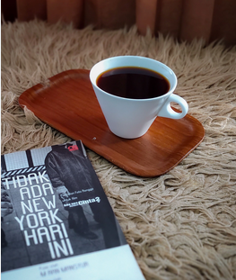
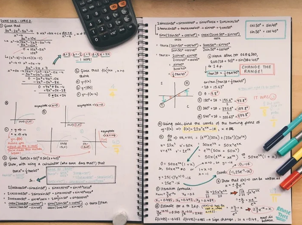

satsuki_shinonome
86 posts
129K followers
214 following
Satsuki Shinonome ✦
Visual diary, late-night sketches, city lights, and quiet moments.
Tokyo ↔ Jakarta · Creative Archive
satsuki-archive.example
